Сетевой центр
Введение
Сетевой центр предназначен для создания схемы сети. В него
заводятся подсети, а в подсети заводятся компьютеры и другие сетевые
узлы. Схема сети является базой данных, позволяющая использовать сервер
в качестве DHCP-сервера и DNS-сервера локальной сети. Также, база
данных компьютеров может использоваться для настройки прав доступа
компьютеров к общим папкам файлового сервера.
Основные параметры сетевого центра
Чтобы открыть окно параметров Сетевого центра, нужно нажать по значку "Сетевой центр" левой кнопкой мыши.
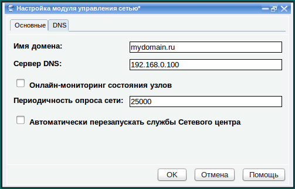
Закладка "Основные"
Имя домена - имя домена. Одновременно является именем корневого
узла каталога LDAP и именем домена DNS данного сервера. Перед
изменением имени домена рекомедуется сделать резервную копию системного
диска, так как при выполнении этой операции происходят очень серьезные
изменения в структуре БД, на что требуется определенное время.
Системный сбой в процессе выполнения этих операций может привести к
потере информации, хранящейся в БД.
DHCP-сервер использует хранящуюся в нем информацию для
выдачи ее подключающимся по протоколу DHCP компьютерам. Также,
DHCP-сервер передает информацию о подключившихся компьютерах на
DNS-сервер, чтобы компьютеры могли общаться друг с другом, используя
свои имена, а не IP-адреса. Параметр "Сервер DNS"
указывает адрес DNS-сервера, на который DHCP-сервер будет передавать
эти параметры. По умолчанию это адрес самого сервера, так как сам
сервер содержит в себе службу DNS.
Если изменился IP-адрес сервера,
нужно также изменить адрес сервера DNS.
Флажок "Онлайн-мониторинг состояния узлов"
включает соответствующую функцию Сетевого центра. Если включен
онлайн-мониторинг состояния узлов, все хосты, зарегистрированные в
Сетевом центре участвуют в нем. Если хост выключен или не доступен по
иным причинам, его значок в дереве Сетевого центра становится серым.
Как только хост становится доступен, его значок снова становится
цветным.
ВАЖНО: Функция "Онлайн-мониторинг состояния узлов"
постоянно сканирует сеть, что может привести к замедлению работы панели
управления. Учитывайте это и включайте ее только в случае необходимости.
Если включена функция
онлайн-мониторинга состояния узлов, он сканирует сеть с определенной
периодичностью. Эта периодичность указана в поле "Периодичность опроса сети"
в 1000-х долях секунды. Чем больше это значение, тем реже происходит
сканирование и тем меньше замедление работы с Панелью управления. Если
Вы обратили внимание на замедление работы при включенном мониторинге
состояния сети, отрегулируйте это значение так, чтобы это замедление не
создавало проблем. На наш взгляд, 25000 это оптимальное значение,
однако сети с большим количеством узлов могут сканироваться дольше и
возможно потребуется увеличить это значение.
При создании общих подсетей и хостов,
вы вносите изменения в конфигурацию служб Сетевого центра. Чтобы
сервер "увидел" эти изменения, он должен перечитать свою
конфигурацию. Для этого нужно перезапустить службы сетевого центра.
Если флажок "Автоматически перезапускать службы Сетевого центра" включен, перезапуск служб происходит автоматически при
применении любых изменений, связанных с Сетевым центром: в окне
редактирования параметров хоста или подсети. Такое
поведение позволяет добиться моментальной реакции сервера на ваши
действия, однако это не всегда удобно, а иногда даже не допустимо, так
как перезапуск служб сервера может прервать работу клиентов,
работающих с ним. Если выключить флажок "Автоматически перезапускать
службы Сетевого центра", службы не будут автоматически
перезапускаться при изменениях в конфигурации и для того, чтобы сервер
узнал об изменениях, нужно перезапускать его вручную. Для этого нужно нажать правой кнопкой мыши по значку "Сетевой центр" в дереве и выполнить команду "Перезапустить" из контекстного меню:
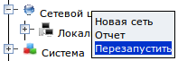
Если этот флажок выключен, службы Сетевого центра автоматически не перезапускаются во всех случаях кроме следующих:
В этих трех случах службы Сетевого центра перезапускаются независимо от состояния флажка. В этих случаях
перезапуск служб необходим для продолжения работы, а при
внесении некоторых особых изменений в этих окнах, необходима полная
перезагрузка сервера (как например описано выше).
Вкладка "DNS"
Данная закладка предназначена для опытных системных администраторов, знающих как настраивать DNS-сервер BIND вручную.
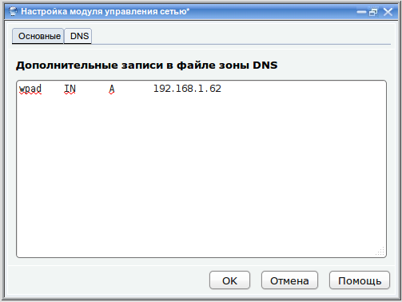
Панель управления автоматически
формирует файлы прямой и обратной зоны DNS для домена, который
обслуживается панелью управления. В файл прямой зоны (/etc/bind/db.domain)
автоматически заносится информация о всех хостах, зарегистрированных в
Сетевом центре. Для каждого хоста создается запись типа A.
Редактировать этот файл вручную нельзя. Однако иногда бывает необходимо
добавить в файл зоны другие, вспомогательные записи, типа MX или
CNAME. На этой закладке можно ввести эти дополнительные записи, в
формате зоны BIND. Они будут добавлены в конец файла зоны.
Работа с подсетями локальной сети
Локальная сеть может состоять из одной или нескольких логических
подсетей. Каждая подсеть характеризуется адресом сети и маской.
Например, у многих это стандартно: адрес сети: 192.168.0.0, маска сети
255.255.255.0. В более крупных компаниях может быть несколько подсетей,
например подсеть 192.168.0.0 и подсеть 192.168.1.0. Все подсети нужно
зарегистрировать в Сетевом центре.
Создание новой подсети
Для создания учетной записи новой подсети нужно нажать правой кнопкой
по значку "Сетевой центр" и выполнить команду "Новая сеть" из контекстного
меню.
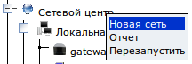
Появится окно параметров подсети:
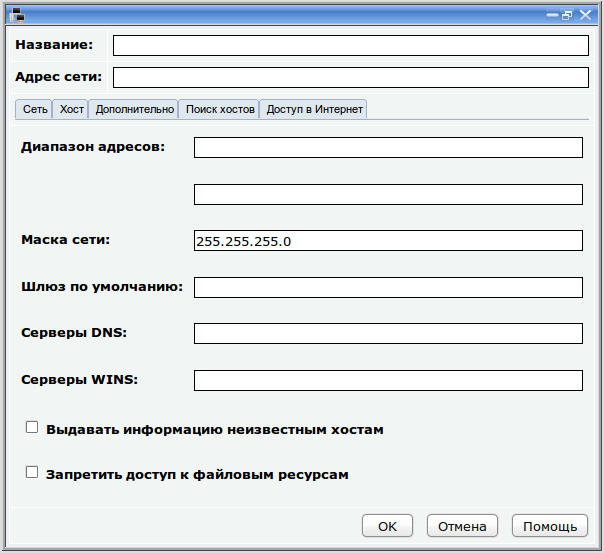
Подсеть определяется тремя основными параметрами: "Адрес сети", "Маска сети" и "Название".
Адрес сети это IP-адрес сети, например 192.168.0.0
Маска сети это маска, разбивающая IP-адрес на адрес сети и адрес хоста, например 255.255.255.0
Название это произвольное наименование, описывающее сеть: например "Локальная сеть"
Остальные параметры, расположенные на закладках "Сеть", "Хост" и
"Дополнительно" используются DHCP-сервером. Он передает их всем
компьютерам сети, которые настроены на автоматическое получение своих
настроек по DHCP.
На закладке "
Сеть" находятся следующие параметры:
-
Диапазон адресов - диапазон IP-адресов, из которого будут выдаваться адреса подключающимся компьютерам
-
Маска сети - маска сети, которая будет выдаваться подключающимся компьютерам
-
Шлюз по умолчанию - IP-адрес шлюза, который будет выдаваться подключающимся компьютерам
-
Серверы DNS - адреса серверов DNS, которые будут выдаваться подключающимся
компьютерам. Адреса DNS указываются через запятую. Пробелов между нимы
быть не должно. В качестве одного из адресов можно указать адрес самого
сервера, потому что он выполняет роль DNS-серера и хранит в себе
информацию о всех компьютерах, которые подключаются к нему по протоколу
DHCP
-
Серверы WINS - адреса серверов WINS, которые будут выдаваться подключающимся
компьютерам. Адреса WINS указываются через запятую. Пробелов между ними
быть не должно. В качестве адреса WINS-сервера можно указать
адрес самого сервера, так как он выполняет роль WINS-сервера.
Флажок "Выдавать информацию неизвестным хостам" имеет смысл только если
в локальной сети зарегистрированы компьютеры (см. раздел "Работа с
узлами подсети"). Если в подсети заведены компьютеры и этот флажок не
установлен, то будет разрешено подключаться по протоколу DHCP только
компьютерам, учетные записи которых зарегистрированы в Сетевом центре в
этой подсети.
Флажок "
Запретить доступ к файловым ресурсам"
включен, сервер включает межсетевой экран, который блокирует доступ
всех устройств, входящих в данную подсеть к службам файлового сервера.
Этот запрет перекрывает все остальные правила доступа, так как
блокирует доступ к файловым службам полностью на уровне портов.
На закладке "Хост" находятся параметры, которые нужны бездисковой рабочей станции, использующей удаленную загрузку по сети:
- TFTP-сервер - адрес TFTP-сервера, на котором находится загрузочный образ операционной системы
- Путь к файлу загрузчику на TFTP-сервере
- Путь к корневой файловой системе - бездисковые станции используют
в качестве корневой файловой системы папку на сервере. В этом поле
указывается путь к этой папке.
Существует огромное количество параметров, которые DHCP-сервер может
передавать подключающимся станциям. На закладках "Сеть" и "Хост"
находятся лишь основные. Большинству подсетей этих параметров будет
достаточно, однако для более тонкой настройки существует закладка
"Дополнительно", позволяющая прописать любое количество других
параметров вручную. Все параметры DHCP-сервера описаны в man-страницах
dhcp-options и dhcpd.conf:
man dhcp-options
man dhcpd.conf
Закладка "Поиск хостов" позволяет обнаружить все компьютеры и другие
сетевые узлы, которые входят в эту подсеть. Для этого используется
адрес сети и маска. Эта возможность может очень сильно сократить время,
требующееся на регистрацию компьютеров локальной сети. После нажатия на
кнопку "Сканировать сеть" запускается сканер портов, который
автоматически обнаруживает все включенные в данный момент сетевые
устройства и отображает информацию о них в виде таблицы. В этой таблице
указан MAC-адрес каждого устройства, IP-адрес и имя хоста (если
устройство имеет имя).
Далее, прямо из этой таблицы, нажав мышью по любой строке можно
зарегистрировать каждый хост. О регистрации хостов описано в разделе
"
Работа с узлами сети".
После ввода всех данных нужно нажать OK и новая подсеть добавится в Сетевой центр.
Теперь все компьютеры и другие сетевые устройства, получающие настройки
по протоколу DHCP будут получать информацию, указанную в параметрых
созданной подсети. Они будут получать IP-адрес из указанного диапазона,
указанные DNS-сервера, WINS-сервера, шлюз по умолчанию и другие
параметры, указанные на закладке "Дополнительно".
Каждый компьютер, который подключается к серверу по DHCP, автоматически
регистрируется на DNS-сервере, с которым этот DHCP-сервер связан. Таким
образом появляется возможность организовать единое пространство имен,
если все компьютеры будут использовать этот DNS-сервер.
Если сервер интегрирован с Интернет-шлюзом Mystix Bastion ACS (см. "
Интеграция с другими серверами"), то появится дополнительная закладка "
Доступ в Интернет",
с помощью которой можно указать основные параметры доступа этой сети к
Интернет через шлюз. Аналогичная закладка также появляется в окне
регистрации хостов, которое будет рассмотрено далее в этом разделе
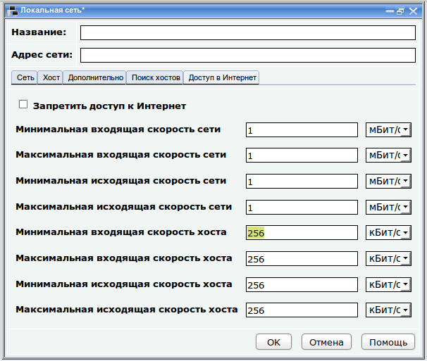
Флажок "
Запретить доступ к Интернет" закрывает доступ к Интернет для всей сети кроме хостов, в окне регистрации которых включен флажок "
Разрешить доступ к Интернет".
Остальные параметры этого окна позволяют указать, как шлюз будет
ограничивать скорость входящего и исходящего Интернет-трафика для этой
сети.
Параметры "
Минимальная входящая скорость сети" и "
Максимальная входящая скорость сети"
определяют соответственно ширину канала входящего трафика для всей
сети. Минимальная скорость, это гарантированная скорость входящего
трафика, предоставляемая этой сети. Максимальная входящая скорость это
скорость, до которой может возрастать реальная скорость сети при
условии, что канал свободен. Эти скорости не должны быть выше реальной
скорости входящего трафика, которую предоставляет провайдер, а лучше,
чтобы она была на 15% меньше.
Аналогичный смысл имеют параметры "
Минимальная исходящая скорость сети" и "
Максимальная исходящая скорость сети", но только для исходящего трафика.
Скорости всех хостов внутри сети не должны быть выше значений,
указанных здесь. По умолчанию скорости всех хостов распределяются
поровну в рамках скорости сети. Однако в этом окне можно напрямую
указать скорости хостов с помощью параметров "
Минимальная входящая скорость хоста", "
Максимальная входящая скорость хоста", "
Минимальная исходящая скорость хоста" и "
Максимальная исходящая скорость хоста".
В рамках этих скоростей будет работать каждый хост, для которого скорость не определена явно в окне
настройки параметров хоста
Сетевого центра. Можно сказать, что это скорости хостов "по умолчанию".
Каждый хост изначально получает минимальную скорость, которая может
расти до максимальной, при условии, что канал не занят другими хостами.
В случае если хост одновременно делает несколько различных соединений с
разными ресурсами и передает или принимает разные виды трафика (HTTP,
FTP и др.), входящая и исходящая скорости между этими соединениями и
видами трафика делятся поровну в рамках скоростей, назначенных для
этого хоста.
Изменение параметров подсети
Можно изменить адрес подсети, ее наименование и любые другие параметры,
используемые DHCP-сервером. Для этого нужно открыть окно параметров
подсети. Нажмите левой кнопкой по нужной подсети и это окно откроется.
Есть и альтернативный вариант открытия окна, нажмите правой кнопкой
мыши по нужной подсети и выполните команду "Изменить" из контекстного
меню.
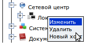
Появится окно редактирования параметров сети, приемы работы с которым были описаны в предыдущей теме.
Удаление подсети
Для удаления подсети нужно нажать правой кнопкой мыши по нужной подсети и выполнить команду "Удалить" из контекстного меню.
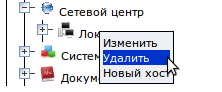
Система попросит подтвердить намерение удалить сеть. После
подтверждения будет удалена подсеть и все компьютеры, которые в ней
зарегистрированы.
Работа с узлами сети
В каждой подсети можно создавать учетные записи компьютеров, которые в
нее входят. Это позволяет более точно управлять DHCP-сервером. Если
учетная запись компьютера заведена в сетевом центре, то компьютер будет
получать настройки не из параметров подсети, а из параметров,
прописанных в его личной учетной записи. Это позволяет, например,
указывать, какой IP-адрес будет автоматически присваиваться каждому
компьютеру.
Создание учетной записи нового хоста
Хост или сетевой узел это любое устройство, подключенное к локальной
сети. Это может быть компьютер, сетевой принтер, маршрутизатор и
что-либо другое. Каждый сетевой узел уникально идентифицируется своим
аппаратным адресом, который прошит на заводе в его сетевую плату. Этот
адрес называется MAC-адресом. Для регистрации сетевого узла в Сетевом
центре необходимо знать его MAC-адрес. Поэтому нужно предварительно его
узнать. Также, если сетевой узел является компьютером, у него должно
быть имя хоста. Это второй важный параметр, который нужно указывать в
Сетевом центре. Важно чтобы MAC-адрес и имя хоста, указанные при
регистрации в Сетевом центре совпадали с MAC-адресом и именем хоста,
прописанными на самом хосте.
Чтобы создать новый узел в Сетевом центре нужно развернуть раздел
"Сетевой центр", определить, в какую из подсетей будет добавляться этот
хост, нажать на этой подсети правой кнопкой мыши и выполнить команду
"Новый хост" из контекстного меню:
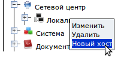
Появится окно параметров новой учетной записи хоста:
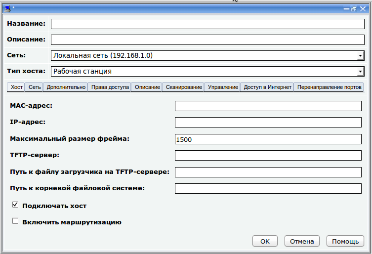
Новый хост определяется такими
параметрами как MAC-адрес, название и IP-адрес, причем имеется в виду
не IP-адрес хоста, как он установлен в данный момент, а IP-адрес,
который будет присваиваться хосту при его подключении по протоколу DHCP.
Также указывается тип хоста и "Сеть", в которую он входит. Поле "Описание" позволяет кратко описать хост.
Далее, на закладках расположены различные параметры, связанные с учетной записью хоста.
На закладках "Хост", "Сеть" и "Дополнительно", как и на аналогичных
закладках в окне параметров подсети, расположены параметры, которые
DHCP-сервер передает хосту при его подключении. На закладке "Права
доступа" устанавливаются права доступа этого хоста к общим папкам на
сервере.
На закладке "
Описание" можно указать произвольное описание этого
устройства, программ, которые на нем установлены и любую другую
полезную для системного администратора информацию.
На закладке "
Сканирование" можно запустить процедуру сканирования,
которая позволит узнать различную системную информацию о текущем хосте,
такую как его тип, открытые порты и службы, которые на нем работают.
На закладке "
Управление" можно
указать параметры доступа к командной строке данного хоста, к его
рабочему столу или к Web-интерфейсу. Если эти параметры указаны, можно
с помощью панели управления подключаться к хосту в этих режимах и
управлять им.
Закладка "Хост":
- MAC-адрес - аппаратный адрес данного хоста. Именно по этому адресу хост идентифицируется DHCP-сервером при подключении
- IP-адрес - IP-адрес, который будет присваиваться этому хосту DHCP-сервером
- Максимальный размер фрейма - максимальный размер Ethernet-фрэйма, который может передавать этот хост, в байтах
- TFTP-сервер - адрес TFTP-сервера, на котором находится загрузочный образ операционной системы
- Путь к файлу загрузчику на TFTP-сервере
- Путь к корневой файловой системе - бездисковые станции используют
в качестве корневой файловой системы папку на сервере. В этом поле
указывается путь к этой папке.
- Подключать хост - разрешать ли хосту подключаться по DHCP
- Включить маршрутизацию - включает на хосте службу перенаправления
пакетов с одной сетевой карты на другую. Это необходимо для организации
шлюзов
Закладка "Сеть":
- Маска сети - маска сети, которая будет выдаваться подключающемуся хосту
-
Шлюз по умолчанию - IP-адрес шлюза, который будет выдаваться подключающемуся хосту
- Серверы DNS - серверы DNS, которые будут выдаваться
подключающемуся хосту. Адреса DNS указываются через запятую. Пробелов
между ними
быть не должно. В качестве одного из адресов можно указать адрес самого
сервера, потому что он выполняет роль DNS-сервера и хранит в себе
информацию о всех компьютерах, которые подключаются к нему по протоколу
DHCP
- Серверы WINS - серверы WINS, которые будут выдаваться
подключающемуся хосту. Адреса WINS указываются через запятую. Пробелов
между ними
быть не должно. В качестве адреса WINS-сервера можно указать
адрес
самого сервера, так как он выполняет роль WINS-сервера.
Закладка "Дополнительно"
Существует огромное количество параметров, которые DHCP-сервер может
передавать подключающимся станциям. На закладках "Сеть" и "Хост"
находятся лишь основные. Большинству подсетей этих параметров будет
достаточно, однако для более тонкой настройки существует закладка
"Дополнительно", позволяющая прописать любое количество других
параметров вручную. Все параметры DHCP-сервера описаны в man-страницах
dhcp-options и dhcpd.conf:
man dhcp-options
man dhcpd.conf
Закладка "Права доступа"
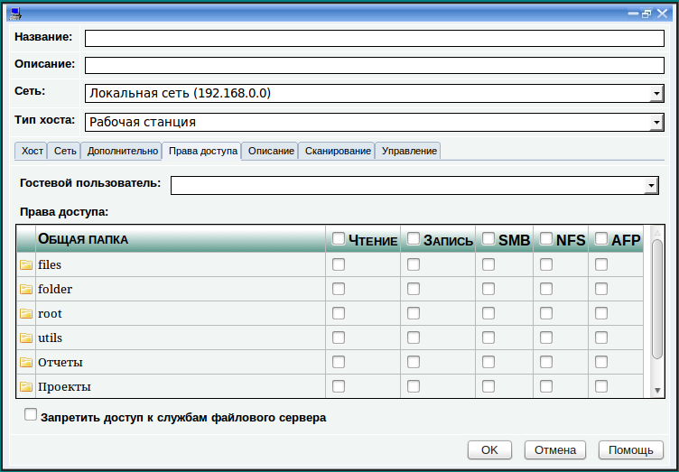
На этой закладке указываются права
доступа к общим папкам сервера. Для каждой папки указывается уровень
доступа (Чтение или Запись) и протокол, по которому предоставляется
доступ к общей папке. Система позволяет предоставлять клиентам доступ к
общей папке по двум протоколам:
- SMB - протокол,
разработанный корпорацией Microsoft. Он используется клиентами Windows
для доступа к общим папкам. Также клиенты UNIX могут обращаться к общим
папкам по этому протоколу, если в их системах установлена клиентская часть пакета Samba
- NFS - протокол, разработанный корпортацией Sun Microsystems.
Он используется клиентами UNIX/Linux для доступа к общим папкам. Также
клиенты Windows могут обращаться к общим папкам по этому протоколу,
если в их системах установлен пакет "Windows Services for UNIX".
- AFP-
протокол, разработанный корпорацией Apple. Он используется на
устройствах работающих под управлением MacOS для предоставления доступа
к общим папкам. Также клиенты UNIX могут обращатся к общим папкам по
этому протоколу, если в их системах установлена поддержка файловой
системы afpfs (установлен пакет afpfs-ng-utils).
Чтобы общая папка была доступна любым клиентам, включите оба флажка (и SMB и NFS и AFP).
Как описывалось ранее в разделе
"Немного теории", хост подключается к файловому серверу от имени
пользователя, под которым он вошел в операционную систему и получает
права доступа к общим папкам этого пользователя. Если этот пользователь
не обнаружен, хост подключается от имени гостевого пользователя и
получает его права. Обычно в качестве гостевого пользователя
используется пользователь guest, однако для каждого конкретного хоста вы можете изменить это, указав другую учетную запись в поле "Гостевой пользователь"
на закладке "Права доступа". После этого, данный хост по умолчанию
будет подключаться не от имени пользователя guest, а от имени
указанного. Это позволит добиться интересных эффектов, например, таким
образом можно настроить систему управления правами доступа на уровне
пользователей и групп и при этом сделать так, чтобы клиенты не вводили
имя пользователя и пароль для доступа к серверу (каждый хост будет
автоматически подключаться от имени пользователя, указанного в поле "Гостевой пользователь").
Если Вы хотите полностью заблокировать доступ данного хоста к серверу, включите флажок "Запретить доступ к службам файлового сервера".
Это заставит сервер включить межсетевой экран и заблокировать доступ
данного хоста по его MAC-адресу ко всем портам файловых служб. Такой
способ блокировки сложнее обойти, чем настройки прав доступа на уровне
пользователей и/или имен хостов.
На закладке "Описание" можно ввести произвольное описание данного хоста, которое в дальнейшем может фигурировать в отчетах.
Закладка "
Сканирование"
позволяет узнать различную сетевую информацию об этом хосте. Это
полезно, если системный администратор только что нашел этот хост и не
знает, что это за устройство. Нажмите кнопку "Получить информацию" и
дождитесь завершения процесса. В окне появится вся информация, которая
была обнаружена в процессе сканирования. Она может помочь вспомнить, с
каким устройством вы имеете дело. Практический пример использования
возможностей сканирования описан в
этой статье.
На закладке "Управление" указываются параметры доступа к хосту в различных режимах.
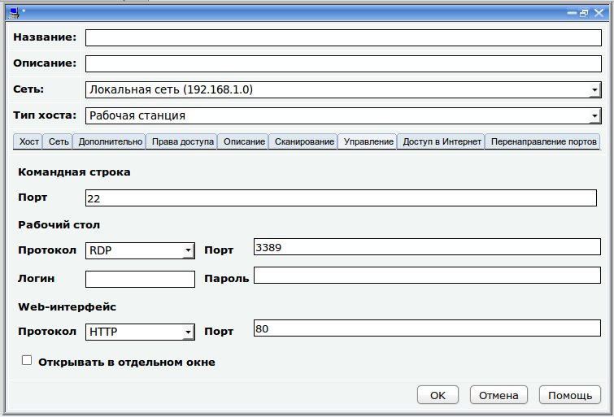
Если данный хост является сервером,
то скорее всего к нему можно подключиться в режиме командной строки по
протоколу SSH. Для этого укажите порт этого хоста,к которому можно подключиться в соответствующем поле (обычно 22).
Если хост является рабочей станцией с
графическим рабочим столом, то скорее всего к ней можно подключиться в
режиме удаленного рабочего стола. Если это рабочая станция Windows, то
к ее рабочему столу можно подключиться по протоколу RDP по стандартному
порту 3389 (если на рабочей станции не настроено иное и брандмауэер не
блокирует доступ). Если это рабочая станция LVA Business Desktop, к ее
рабочему столу можно подключиться по протоколу VNC, к порту 5900. На
других станциях под управлением GNU/Linux возможно портебуется
дополнительная настройка, чтобы к их рабочему столу можно было
подключаться. Для подключения к рабочему столу рабочей станции
обычно требуется указывать имя пользователя и пароль. Заполните
соответствующим образом поля "Протокол", "Порт", "Имя пользователя" и "Пароль" под строкой "Рабочий стол" и вы сможете подключаться к рабочему столу этого хоста.
Если хост не является ни сервером, ни
рабочей станцией, а является, к примеру, интеллектуальным коммутатором
или маршрутизатором, скорее всего у него есть Web-интерфейс, работающий
либо по протоколу HTTP, либо по HTTPS. Также, на самом файловом сервере
есть интерфейс Webmin, работающий по протоколу HTTPS и использующий
порт 10000. Чтобы подключаться к Web-интерфейсу хоста, заполните
соответствующим образом поля "Протокол" и "Порт" под строкой "Web-интерфейс".
После заполнения всех полей нажмите кнопку OK,
хост будет зарегистрирован на DHCP-сервере и в базе данных DNS-сервера,
и появится в сетевом центре.
После этого, когда компьютер, имеющий
MAC-адрес, указанный при создании этого хоста подключится к серверу по
протоколу DHCP, он автоматически получит настройки из этой учетной
записи. Если в параметрах учетной записи хоста настроек будет
недостаточно, остальные он получит из учетной записи подсети, в которой
данный хост зарегистрирован.
Если вы заполнили поля на закладке "Управление",
то при нажатии правой кнопкой мыши по значку хоста в дереве Сетевого
центра можно будет выполнить команду "Управлять" из контекстного меню:
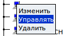
а затем выбрать режим, в котором
нужно подключиться к этому хосту. Список доступных режимов зависит от
того, как вы заполнили закладку "Управление".
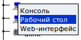
После выбора режима откроется окно, в
котором будет отображен либо рабочий стол хоста, либо его командная
строка, либо Web-интерфейс.
При подключении потребуется ввести имя пользователя и пароль, которые для этой службы установлены на самом удаленном хосте.
Например так может выглядеть экран рабочего стола удаленного хоста, работающего под управлением LVA Business Desktop.
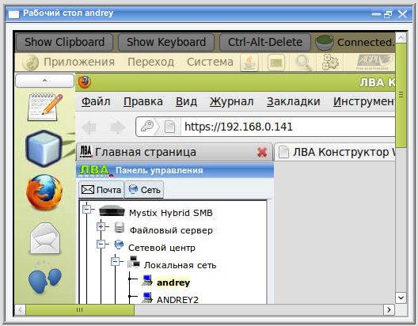
ПРИМЕЧАНИЕ: Подключение к
рабочему столу по протоколу RDP происходит иначе. Для того чтобы оно
произошло, необходимо подключаться с рабочего места, работающего под
управлением GNU/Linux и чтобы была установлена программа rdesktop
(устанавливается по умолчанию в большинстве случаев). Также в системе
должно быть настроено чтобы файлы с расширением .sh открывались
программой /bin/sh (интерпретатор языка оболочки Bash). При выполнении
этих условий рабочий стол RDP должен открываться в новом окне, которое,
в свою очередь вызывает программу rdesktop и открывает рабочий стол в
ней. Это временно, работы по подбору более удобного средства открытия
рабочих столов по протоколу RDP ведутся.
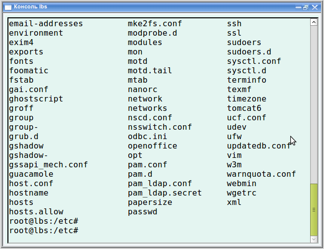
Так выглядит окно с подключением к командной строке самого файлового
сервера (сам сервер тоже нужно зарегистрировать в Сетевом центре).
Параметры доступа к Интернет.
Если сервер интегрирован с Интернет-шлюзом Mystix Bastion ACS (см. "
Интеграция с другими серверами"), то в окне параметров хоста также присутствуют закладки "
Доступ в Интернет" и "
Перенаправление портов".
На закладке "
Доступ в Интернет" указывается, имеет ли данный хост доступ в Интернет и скорость входящего и исходящего трафика для этого хоста.
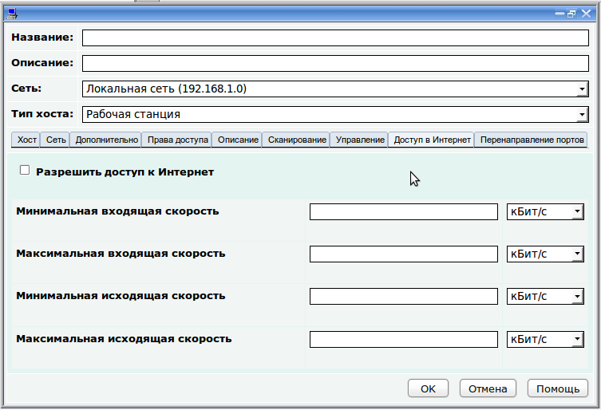
Флажок "
Разрешить доступ к Интернет"
разрешает этому хосту работать с Интернет в случае если доступ к
Интернет закрыт для локальной сети, в которую этот хост входит (включен
флажок "
Запретить доступ к Интернет" в окне
параметров локальной сети). В иных случаях этот флажок не дает никакого эффекта.
Далее указываются скорости входящего и исходящего трафика этого хоста в
битах/с, килобитах/с или мегабитах/c. Если эти поля оставить пустыми,
то скорость работы в Интернет будет ограничена значениями, указанными в
аналогичных полях в
окне свойств локальной сети, в которую входит этот хост.
Минимальная скорость это гарантированная скорость, которая
предоставляется данному хосту. Максимальная скорость, это скорость, до
которой может возрастать реальная скорость при условии, что канал
свободен.
В этом окне указывается минимальная и максимальная скорости как
входящего, так и исходящего трафика. Указанная скорость не должна
превышать скорость, указанную при настройке локальной сети и скорость,
которую предоставляет провайдер Интернет (хотя это позволяется, но
может привести к увеличению колличества коллизий и задержек на входе в
Интернет).
С помощью закладки "
Перенаправление портов" можно указать порты данного хоста, которые будут видны из Интернета.
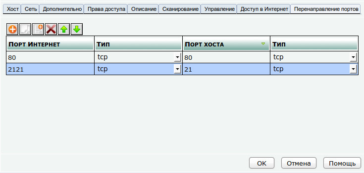
В таблице указывается, какие порты данного хоста (колонка "
Порт хоста") будут видны в Интернет как порты, указанные в колонке "
Порт Интернет".
Например, на данном рисунке показано, что 21-й порт этого хоста будет
доступен из Интернет как порт 2121. Это значит что при обращении из
Интернет к шлюзу по его внешнему IP-адресу к его порту 2121, все
запросы будут перенаправляться на 21-й порт этого хоста в локальной
сети.
Также здесь показано перенаправление 80-го порта шлюза на 80-й порт
этого хоста. Это пример того как можно "пробросить" Web-сервер из
локальной сети в Интернет. Подробнее об операции перенаправления портов
читайте в руководстве "
Управление доступом к сети", которое поставляется вместе со шлюзом Mystix Bastion ACS.
Изменение параметров хоста
Можно изменить название хоста, его
MAC-адрес и любые другие параметры DHCP-сервера и права доступа к общим
папкам. Для этого нужно открыть окно параметров хоста. Чтобы это
сделать, нужно щелкнуть левой кнопкой мыши по названию хоста. Есть и
альтернативный вариант. Можно щелкнуть правой кнопкой мыши по названию
хоста и выполнить команду "Изменить" из контекстного меню.
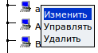
Появится окно параметров хоста, приемы работы с которым были описаны
ранее. После завершения редактирования нажмите OK и изменения
применятся.
Удаление хоста
Для удаления учетной записи хоста нужно нажать на нем правой кнопкой мыши и выполнить команду "Удалить" из контекстного меню.
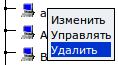
Система попросит подтвердить намерение удалить хост. После подтверждения хост будет удален с DHCP-сервера и из Сетевого центра.
Работа с группами объектов
В разделе "Файловый сервер" есть подраздел "Группы объектов". Он предназначен для создания так называемых групп объектов.
Каждая группа может включать в себя
компьютеры, зарегистрированные в сетевом центре. Группа объектов это
интерфейсный объект, группирующий компьютеры в окне параметров общей
папки при установке прав доступа хостов к общей папке.
Создание новой группы объектов
Для создания новой группы объектов нужно нажать правой кнопкой мыши по подразделу "Группы объектов" и выполнить команда "Новая группа объектов" из контекстного меню.
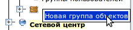
Появится окно параметров группы объектов.
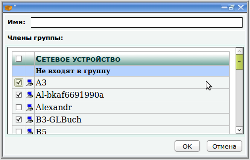
У каждой группы объектов есть имя и
члены группы. Укажите название группы и включите флажки напротив
компьютеров, которые входят в группу.
После завершения работы с группой нажмите OK, группа появится в подразделе "Группы объектов".
Каждую группу в этом окне можно
сворачивать и разворачивать, нажимая левой кнопкой мыши по ее значку.
Можно включать и выключать флажки "Чтение", "Запись", "SMB" и "NFS" сразу у всех
компьютеров группы, нажимая на соответствующие флажки напротив названия группы.
Изменение параметров группы объектов
Можно изменить имя группы и ее
состав, открыв окно параметров группы объектов. Чтобы это сделать нужно
нажать левой кнопкой мыши по нужной группе или нажать правой кнопкой
мыши по нужной группе и выполнить команду "Изменить" из контекстного меню:
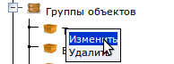
В окне параметров группы измените имя и состав группы и нажмите OK.
Удаление группы объектов
Для удаления группы объектов нужно нажать правой кнопкой мыши по группе и выполнить команду "Удалить" из контекстного меню.
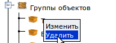
Система попросит подтверждения операции. После подтверждения группа
будет удалена. Компьютеры, которые были включены в группу будут
исключены из нее и попадут в системную группу "Вне групп".
Отчет о состоянии сети
Информацию о зарегистрированных в сетевом центре компьютерах, группах и
подсетях можно вывести в виде отчета, который можно сохранить на диске
и распечатать.
Для создания отчета нужно нажать правой кнопкой мыши по разделу
"Сетевой центр" и выполнить команду "Отчет" из контекстного меню.
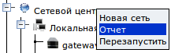
Появится окно настройки отчета:
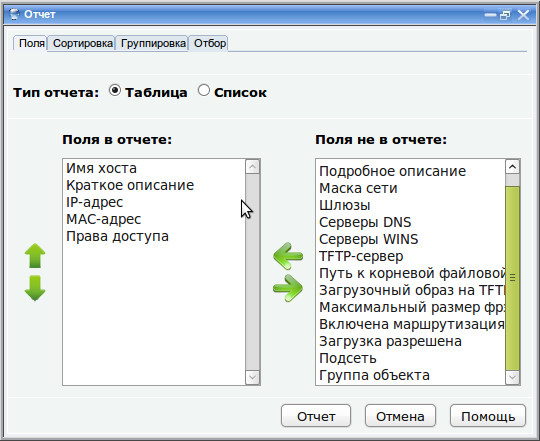
При настройке отчета указывается тип отчета, какие поля будут в него
включены, по каким полям данные будут отсортированы, по каким полям они
будут сгруппированы, а также, какие из существующих данных будут
отобраны в отчет.
Эти параметры указываются на соответствующих закладках "Поля", "Сортировка", "Группировка" и "Отбор".
Закладка "Поля"
На закладке "Поля" указывается, какие поля будут присутствовать в
отчете. Поля, которые будут в отчете указаны в списке "Поля в отчете".
В списке "Поля не в отчете" указаны все остальные поля, которые также
можно включить в отчет. Вы можете перемещать поля из одного списка в
другой. Для этого нужно выделить поле в одном из списков и воспользоваться стрелками , для его перемещения.
В отчете, колонки будут идти в том порядке, в котором они указаны в списке "Поля в отчете". Можно изменить этот порядок, перемещая поля в этом списке вверх и вниз с помощью стрелок .
Закладка "Сортировка"
Закладка "Сортировка" аналогична закладке "Поля". В списке "Поля с сортировкой"
указываются поля, по которым данные в отчете будут отсортированы в
алфавитном порядке. Можно добавлять в этот список любые поля из списка "Поля без сортировки", не обязательно чтобы эти поля отображались в отчете.
Закладка "Группировка"
Закладка "Группировка" аналогична закладкам "Поля" и "Сортировка". В списке "Активные группировки"
указываются поля, по которым будут сгруппированы сетевые узлы. Логично
группировать компьютеры по полям "Подсеть" и/или "Группа объекта", хотя
можно пробовать группировать по любым полям и смотреть, что из этого
получится.
Закладка "Отбор"
На этой закладке можно настроить условия попадания информации о каждом сетевом устройстве в отчет. Для каждого поля из списка "Поля"
указываются возможные значения этого поля. Например, можно указать,
чтобы в отчет попадали только компьютеры с определенными IP-адресами и
определенным "типом хоста". Для этого нужно выбрать поле "IP-адрес",
после чего в списке "Отбираемые значения"
включить галочки только для таких IP-адресов, которые должны попасть в
отчет. Затем нужно выполнить аналогичное действие для поля "Тип хоста".
Заданные условия для каждого поля складываются друг с другом с помощью оператора И.
Формирование отчета
После указания всех параметров нужно нажать кнопку "Отчет"
и отчет сформируется. Отчет формируется в виде файла с названием
report.odt, который на самом деле является HTML-страницей. Благодаря
расширению, отчет можно открыть с помощью редактора OpenOffice.org
Writer и отредактировать (изменить размер колонок, настроить параметры
страницы, поля и т. д.).
При нажатии на кнопку "Отчет",
в зависимости от настроек браузера, будет либо предложено сохранить
файл report.odt на диске, либо отчет отобразится прямо в браузере, в
окне, в котором находятся параметры отчета. Во втором случае отчет
отображается в режиме "только-для-чтения". Чтобы иметь возможность его
редактировать, нужно выполнить команду "Файл" -> "Сохранить как" из меню, которое появится в окне с отчетом. После сохранения, отчет станет доступен для редактирования прямо в окне браузера.
На следующей картинке отображен
отчет, в котором присутствуют поля "Имя хоста", "IP-адрес", "MAC-адрес"
и "Права доступа", отсортированный в алфавитном порядке по полю "Имя
хоста" и сгруппированный по полю "Группа объектов".
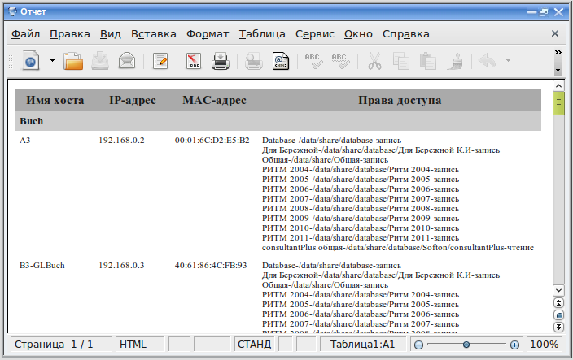